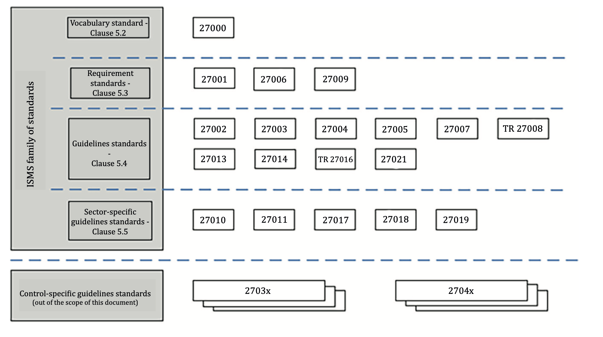
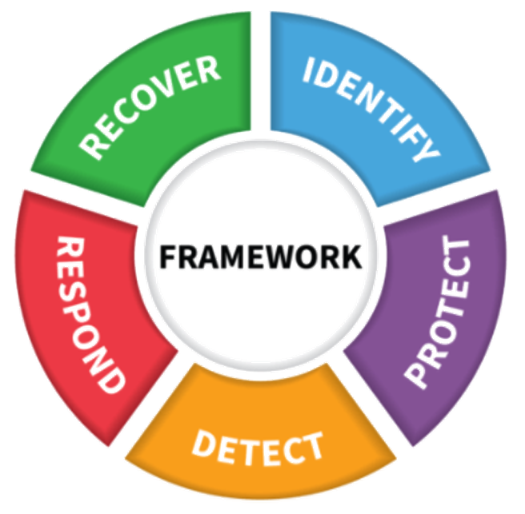
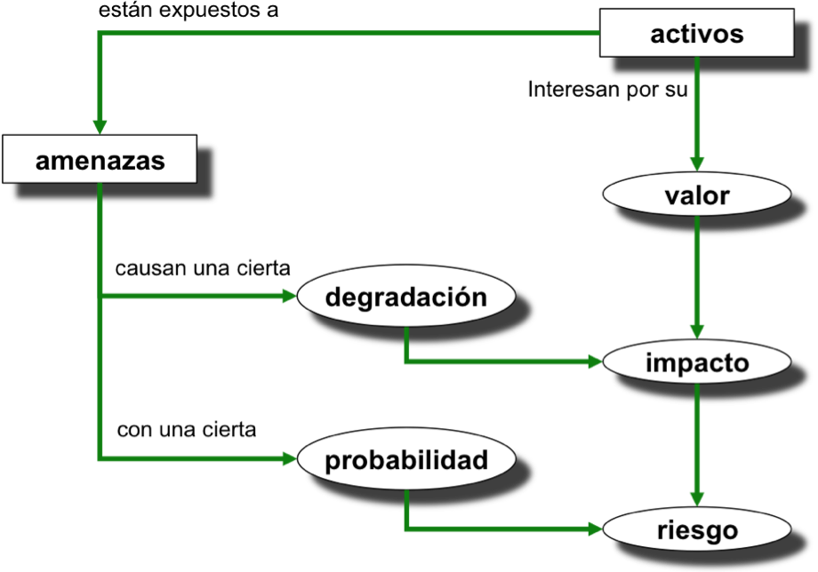
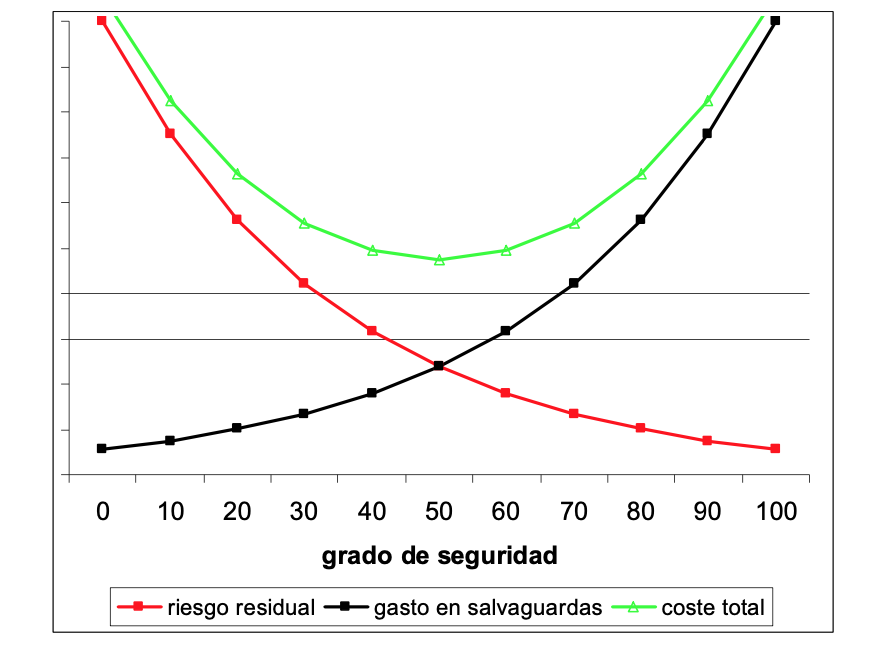

Sistemas de Gestión de la Seguridad de la Información (SGSI) y Análisis de Riesgos¶
1 Introducción al SGSI¶
Un Sistema de Gestión de la Seguridad de la Información (SGSI) es un conjunto de políticas, procedimientos, recursos y técnicas estructuradas que utiliza una organización para gestionar sus riesgos informáticos y proteger sus activos críticos de forma continua.
En lugar de aplicar soluciones aisladas (como instalar un antivirus o un firewall sin una planificación previa), el SGSI propone un enfoque sistemático y estructurado. El propósito de un SGSI es preservar la confidencialidad, integridad y disponibilidad de la información, inspirando confianza a todas las partes interesadas.
El SGSI debe estar integrado en los procesos de la organización y se basa en el ciclo de mejora continua (Ciclo de Deming):
- Planificar (Plan): Evaluar los riesgos, definir el alcance y diseñar la política de seguridad.
- Hacer (Do): Implementar los controles y medidas de seguridad (Plan de Seguridad).
- Verificar (Check): Auditar, monitorizar y supervisar si las medidas funcionan.
- Actuar (Act): Corregir fallos y mejorar el sistema adaptándose a nuevas amenazas.
2 Marco Normativo y Estándares de Seguridad¶
Para diseñar e implantar un SGSI, las organizaciones no parten de cero, sino que se apoyan en marcos de trabajo y normativas internacionales y nacionales.
2.1 Familia de normas ISO/IEC 27000¶
Es el estándar internacional por excelencia para los SGSI. Establece las bases y requisitos para gestionar la seguridad en cualquier tipo de organización.

Familia de normas ISO 27000
- ISO/IEC 27000: Define los términos y conceptos clave (el vocabulario) en la gestión de la seguridad de la información.
- ISO/IEC 27001: Define los requisitos que debe cumplir un SGSI. Es la única norma certificable por auditores externos.
- ISO/IEC 27002: Es un código de buenas prácticas. Proporciona el catálogo de controles de seguridad que la organización puede implementar. En su versión de 2022, los controles se agrupan en 4 temas: Organizacionales, de Personas, Físicos y Tecnológicos.
- ISO/IEC 27005: Proporciona directrices específicas para la Gestión de los Riesgos en la seguridad de la información.
2.2 Esquema Nacional de Seguridad (ENS)¶
El ENS (Real Decreto 311/2022) establece las políticas de seguridad para la protección de la información y los servicios ofrecidos por las Administraciones Públicas españolas. Su cumplimiento es obligatorio para entidades públicas y para las empresas privadas (proveedores) que trabajen o presten servicios a dichas administraciones.
2.3 NIST Cybersecurity Framework¶
Es una guía muy popular desarrollada en EE.UU. para gestionar los riesgos en redes y sistemas. Se centra en cinco funciones clave para un ciclo de mejora continua:
- Identificar: Inventario de activos y riesgos.
- Proteger: Implementación de salvaguardas.
- Detectar: Detección de eventos e incidentes.
- Responder: Actuación ante el incidente.
- Recuperar: Restauración de servicios críticos.

NIST framework
2.4 Guías Nacionales (CCN-CERT e INCIBE)¶
- El CCN (Centro Criptológico Nacional) publica las Guías CCN-STIC, fundamentales para cumplir el ENS en el sector público.
- El INCIBE (Instituto Nacional de Ciberseguridad) ofrece guías, decálogos y herramientas orientadas principalmente a ciudadanos y empresas privadas (PYMEs).
3 El Corazón del SGSI: Análisis de Riesgos¶
El análisis de riesgos es la fase de "Planificación" del SGSI donde se determina qué puede fallar, qué impacto tendría y qué probabilidad hay de que ocurra.
3.1 Conceptos clave en el análisis¶
Para entender el proceso, debemos relacionar varios conceptos fundamentales:
- Activo: Lo que queremos proteger (información, servidores, red, personal). Tienen un valor para la empresa.
- Amenaza: Lo que puede dañar al activo (virus, incendio, robo, error humano).
- Vulnerabilidad: La debilidad que permite a la amenaza actuar (software sin actualizar, puerta sin pestillo).
- Salvaguarda (o Control): La medida de protección que instalamos para protegernos.
3.2 Estimación del Riesgo¶
El riesgo es la posibilidad de que una amenaza explote una vulnerabilidad y cause un impacto. Matemáticamente se define como:
- Impacto: El daño o degradación que sufriría el activo (pérdida de confidencialidad, integridad o disponibilidad).
- Probabilidad: La frecuencia con la que esperamos que ocurra la amenaza.
El siguiente diagrama refleja este proceso:

Proceso de estimación del riesgo (Según metodología Marguerit v3)
3.3 Matriz de evaluación cualitativa¶
A nivel operativo, en lugar de utilizar cálculos matemáticos complejos, es muy común utilizar escalas cualitativas para evaluar y priorizar el riesgo de forma visual.
| Impacto / Probabilidad | Baja | Media | Alta |
|---|---|---|---|
| Alto | Riesgo Medio | Riesgo Alto | Riesgo Crítico |
| Medio | Riesgo Bajo | Riesgo Medio | Riesgo Alto |
| Bajo | Riesgo Despreciable | Riesgo Bajo | Riesgo Medio |
- Zonas Críticas y Altas: Requieren intervención urgente.
- Zonas Bajas o Despreciables: Pueden ser asumidas, pero se deben vigilar periódicamente.
4 Tratamiento de los Riesgos y Plan de Seguridad¶
Una vez analizado el riesgo, la dirección de la empresa debe establecer un Plan de Seguridad y decidir qué estrategia aplicar para cada riesgo identificado.
4.1 Opciones de Tratamiento¶
Existen cuatro estrategias principales frente al riesgo:
- Mitigar: Implementar controles o salvaguardas que reduzcan la probabilidad o el impacto (Ej: instalar un firewall, configurar copias de seguridad).
- Evitar: Eliminar la actividad, servicio o arquitectura que genera el riesgo (Ej: cerrar un puerto expuesto a Internet que no se utiliza).
- Transferir: Compartir o derivar el riesgo a un tercero (Ej: contratar un seguro de ciberseguridad o externalizar el servidor a un proveedor de nube).
- Aceptar: Asumir el riesgo conscientemente sin aplicar controles adicionales. Suele hacerse cuando el coste del tratamiento supera con creces los beneficios o el valor del activo protegido.
4.2 Riesgo Residual y Equilibrio de Costes¶
Cuando aplicamos salvaguardas a un riesgo inicial, este disminuye, pero casi nunca desaparece por completo.
El Riesgo Residual es el riesgo que permanece después de haber aplicado las medidas de protección.
La seguridad total no existe y proteger un sistema al 100% es económicamente inviable. Por tanto, la gestión de riesgos busca un punto de equilibrio óptimo entre lo que cuesta implantar la medida de seguridad y el riesgo residual que la empresa está dispuesta a aceptar.

Equilibrio óptimo entre coste de las salvaguardas y riesgo residual asumido.
Gastar demasiado para reducir un riesgo mínimo es ineficiente, igual que gastar muy poco y dejar a la organización expuesta a un impacto fatal.
5 Auditorías de Seguridad¶
Las auditorías corresponden a la fase de Verificación (Check) dentro del ciclo del SGSI.
Una auditoría de seguridad es un proceso sistemático e independiente para evaluar si las medidas de protección y el propio SGSI están funcionando correctamente, cumpliendo con las normativas (como el RGPD o el ENS) y las políticas internas de la empresa.
Tareas habituales en una auditoría:¶
- Revisión de políticas, normativas y configuración de sistemas.
- Análisis de vulnerabilidades y gestión de permisos/usuarios.
- Pruebas de penetración (Pentesting): Simulaciones controladas de ciberataques para comprobar la resistencia real de los sistemas.
- Redacción de un Informe de Resultados que detalle los hallazgos (no conformidades) y proponga acciones de mejora.
Las auditorías permiten la detección temprana, validan el modelo de seguridad ante terceros (certificaciones ISO 27001) y alimentan el ciclo de mejora continua del SGSI.
Ejercicios¶
Bibliografía¶
- ISO/IEC 27000: Descripción de las normas de la familia y definiciones de vocabulario
- Esquema Nacional de Seguridad (ENS): https://www.ens.es/
- European Union Agency for Cybersecurity (ENISA): https://www.enisa.europa.eu/
- Libros de MAGERIT v3 (Metodología de Análisis de Riesgos): Administración Electrónica - MAGERIT.